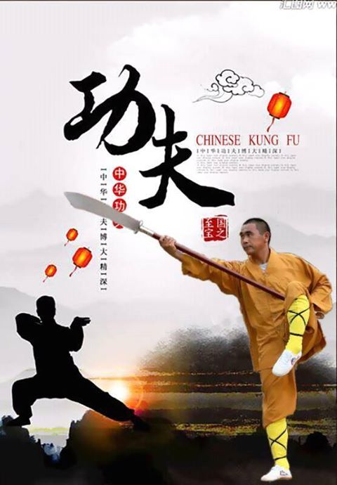

The History of Chinese Kung Fu
 There is no doubMaster Du, promoting for chinese Kung Fut that original source of Kung Fu is China, but the history of this sport is highly controversial, however, we know that the history of Kung Fu dates back to the primitive times when tribes traveled throughout the China. Their fight wasn't for trophies or medals, but for survival against wild animals and other tribes or even within their own hierarchy. The first time martial arts started in form of wrestling while imitating wild animals. Participants would intertwine their arms to mimic the interlocking horns of animals and the stronger would try and subdue the weaker. The only weapons that would have been available at this time were primitive clubs, sticks and small rocks. When the tribes became more organized they started to develop their weapons and combat skills. They sharpened the ends of sticks to make spears. Also, they began to tie a shaped rock to a club, to produce a weapon that we call today as an ax.
Shang period (16—11 century BCE)
When Chinese tribal society developed as result their combat skills were developed. The most important change came during the Bronze Age in China between the (16th and 11th centuries BCE). After discovering the bronze there was a significant advancement in the development of different weapons, such as ax, the halberd, spear, straight sword, bow and arrow and broad sword. At that time the several Chinese tribal began to organize their armies by equipping their armies with horses, armor, and long-handled weapons such as the long-handled broadsword Horsemanship skills were improved during that time in order to use the weapons more effectively.
Spring & autumn and warring states period (770-220 BCE)
During this period both armed and unarmed combat skills became highly improved by adding many methods of attack, self-defense as well as counter attack. Also during this time martial art competitions and events became very popular throughout China and many people were seriously wounded or killed because of lack of protective and safety clothes and wraps. This did not lead stoppage of the enthusiasm for competing, however. Fighting using swords became very popular during this time. Both female and male shared the love of sword fighting.
Qin dynasty (221-207 BCE)
Martial arts competitions became much stricter during this period, with more rules, the placement of referees and improve the use of the laitai (a raised open ring; pronounced lay tie). During the periods previously mentioned, combat skills were used to develop the armies whose leaders were always struggling for supremacy. Many of the famous generals during that time were very skilled in armed and unarmed combat skills, and by this time the martial arts’ skills were continuously being refined or modified to keep up with the development of weapons. With the several weapons now being used, the most popular were known as the Eighteen Weapons (sword, longbow, crossbow, lance, battle-axe, staff, long-bladed spear, cudgel, dagger ax, fork, truncheon, mallet, jingal, joined bludgeon, chain, hooks, halberd, and shield).
Han dynasty (206 BCE—220 CE) to Sui Tang dynasty (518-907 CE)
During Han and Sui Tang Dynasties the development of martial arts within the army forces continued. Officers and generals had to take tests then ranked by their skills. These tests consisted of the both armed and unarmed combat skills, on foot or on horseback. Now you can see how the Chinese martial arts developed through the military training. Many people in the West have only heard of the word of Kung Fu to refer Chinese martial arts, but in fact, the correct term that refers all Chinese martial arts is Wushu. The term Wushu covers all kinds and styles of the Chinese martial arts. The Chinese character Wu 武means military and the Chinese character for Shu 术means art. So merging the two characters together simply merges the military training and the arts together. There is a direct translation of Wushu into English but is generally known as Chinese martial arts.
Song dynasty (960-1279 CE)
During the Song Dynasty, martial art associations had been organized and set up in the different provinces of China. And Kung Fu/Wushu was most popular art during this period. A part of the civilian population was now demonstrated Kung Fu/Wushu performances at festivals. While many street performers demonstrate their Kung Fu Skills by breaking large rocks with their bare hands and breaking spear shafts.
Ming dynasty (1368-1644 CE)
During the Ming Dynasty, Kung Fu/Wushu began to form many different schools. Before this time martial artist and Masters kept their skills secret and lessons were passed from the master to the student through word of the month, there was very little written books or articles, therefore the student was not able to read and they only rely on watching and listening to their masters. However, there are paintings that have been unearthed dating back to the primitive age and shows men wrestling in different combat stances.
Qing dynasty (1644-1911 CE)
During the Qing Dynasty, the martial arts became more defined in their several skills, every school developing its own approach to the many training methods. There was also a rise in secret societies that used Kung Fu/Wushu to great effect. It reported that students practiced not only their art but also they were taught poems or songs and calligraphy, the words of which held the secret of their fighting skills. During this period many of the styles that we know today were developed, such as Tan Tui, Xingyiquan, Taijiquan, Baghuaquan, Changquan, Bajiquan, and Tongbiquan. the Jing Wu Sports Society (Shanghai) was formed In 1910 and that was considered the beginning of the Kung Fu/Wushu martial arts that we know today. In 1928 the now-famous Nanjing Academy (the Central Wushu Institute) was established by the Chinese Government to develop Kung Fu/Wushu as a structured training syllabus, not just for self-defense but for the obvious health purposes. It was during the Qing Dynasty that many of the Kung Fu styles known today were developed including Taijiquan.